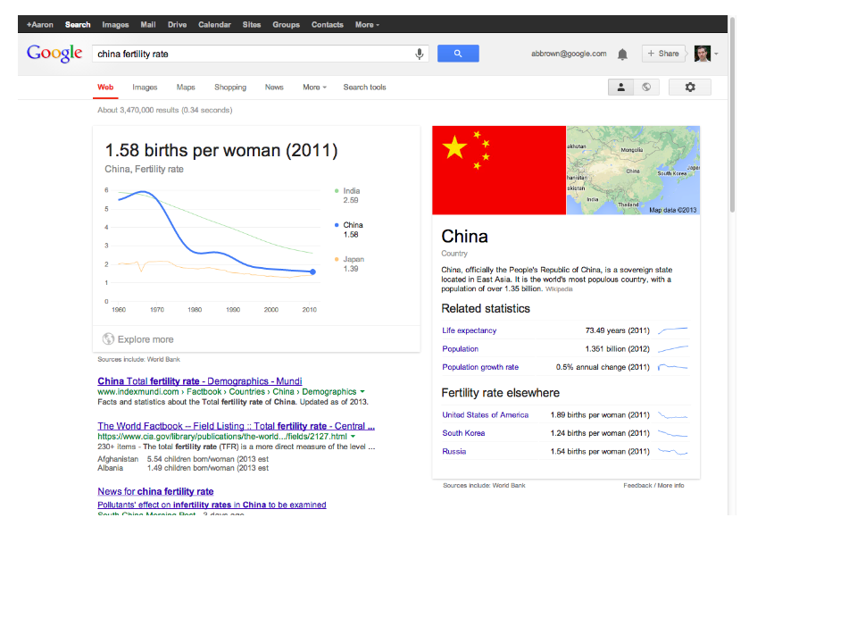
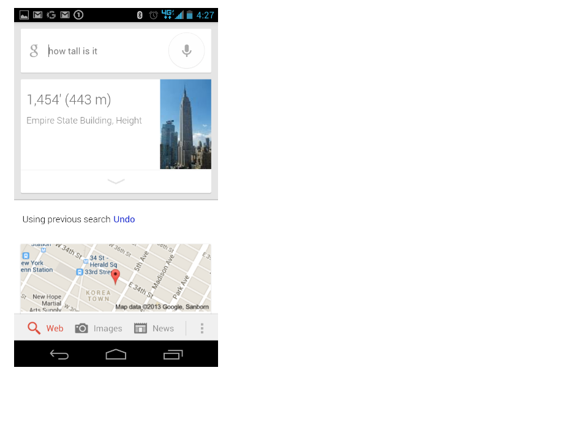
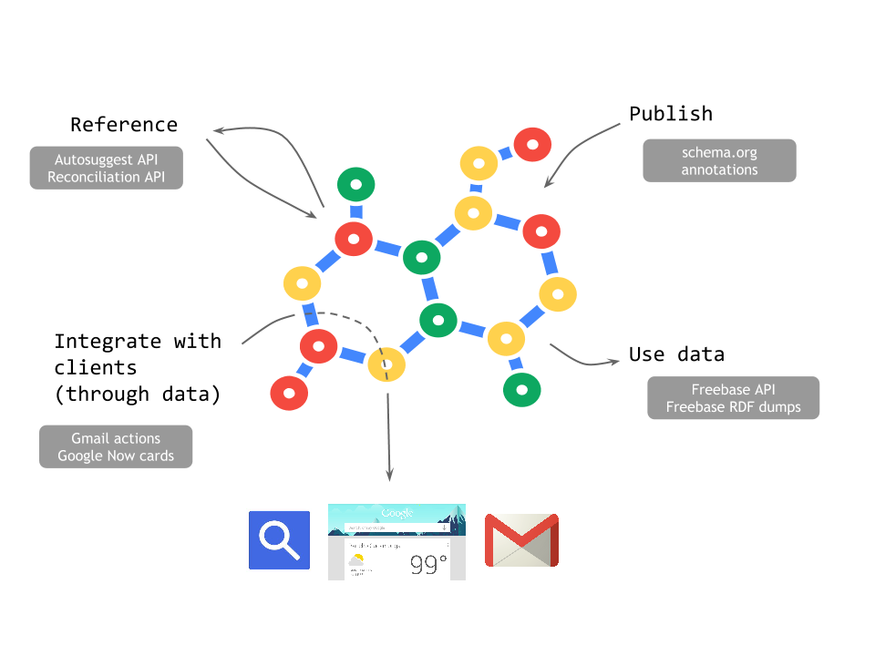
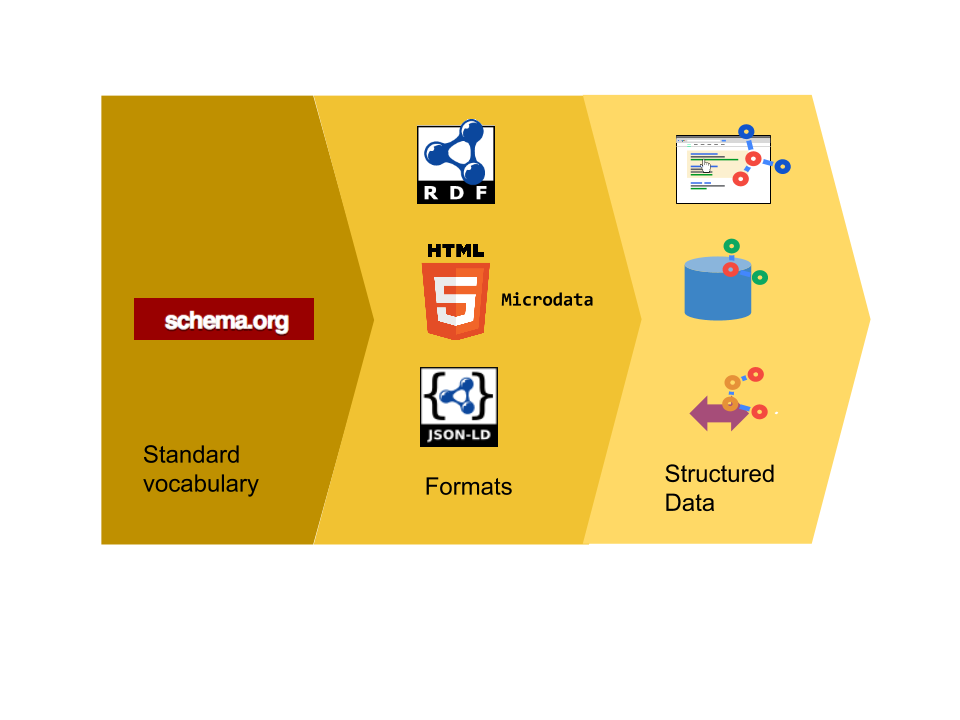
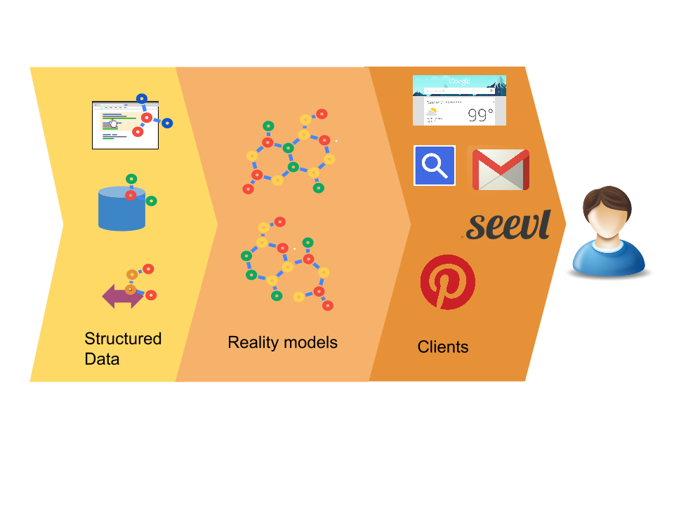

Ewa Gasperowicz
Developer Relations, Knowledge (Search)
- Google Custom Search
- Schema.org
- Knowledge Graph
A także absolwentka SGH i alumn SKN Informatyki :)
Będziemy rozmawiać o:
- Czym są grafy wiedzy i dlaczego ich znaczenie rośnie
- Jak Google zbudował Graf Wiedzy i jakie technologie wykorzystuje
- Jak deweloperzy i biznes mogą na tym skorzystać
"Na naszych oczach korzystanie z informacji zmienia się dramatycznie"
Internet i wyszukiwanie w 1998
Internet i wyszukiwanie w przyszłości?
Wyszukiwanie tekstowe już nie wystarcza
 Grafy wiedzy (nie tylko Google)
"I have a dream for the Web [in which computers] become capable of analyzing all the data on the Web – the content, links, and transactions between people and computers. A "Semantic Web", which makes this possible, has yet to emerge, but when it does, the day-to-day mechanisms of trade, bureaucracy and our daily lives will be handled by machines talking to machines. The "intelligent agents" people have touted for ages will finally materialize."
Rola SGH i SKN Informatyki:)
Realizing added value with semantic web
KŁECZEK Dariusz ; JASKOWSKI Tomasz ; MAŁANIJ Rafał ; ...
The Business Case for Semantic Web requires reports on its usefulness in real-life scenarios. In this study we introduce a framework for analysing potential application scenarios of the Semantic Web, which is based on the concept of added value. Based on this analysis, we have formulated a hypothetical life cycle of Semantic Web technologies in corporate IT infrastructures. It identifies corporate knowledge management as the application area, where a killer application is most likely to be developed. As a proof of concept the design, deployment and evaluation of a Skills Management system is presented.
Opublikowany przez Springer
OTM Confederated International Conferences, Agia Napa, CYP, 2005-10-31
ISSN : 0302-9743 ISBN : 3-540-29739-1Graf Wiedzy Google składa się z milionów faktów
Do opisu grafu służy standard RDF (Resource Description Framework)
- Każdy fakt to tzw "trójka semantyczna":
- Podmiot - predykat - obiekt
Skąd się biorą fakty w Grafie Wiedzy?
- Gafowe bazy danych - Freebase
- Strony internetowe z semantycznym markupem
- Inne dokumenty, np email
Każdy dokument, który może być zinterpretowany maszynowo.
Jak publikować semantyczne dane?
Potrzebne są
- Standardowe nazewnictwo
- Identyfikatory
- Standardowe formaty
Jak publikować semantyczne dane?
Potrzebne są
- Standardowe nazewnictwo
- Identyfikatory
- Standardowe formaty
Jak publikować semantyczne dane?
Potrzebne są
- Standardowe nazewnictwo
- Identyfikatory
- Standardowe formaty
Open ecosystem
With Schema.org
Jak publikować semantyczne dane?
Potrzebne są
- Standardowe nazewnictwo
- Identyfikatory
- Standardowe formaty
Jak publikować semantyczne dane?
Potrzebne są
- Standardowe nazewnictwo
- Identyfikatory
- Standardowe formaty
Jak publikować semantyczne dane?
Potrzebne są
- Standardowe nazewnictwo
- Identyfikatory
- Standardowe formaty
Reconciliation
Reconciliation
Reconciliation
Jak publikować semantyczne dane?
Potrzebne są
- Standardowe nazewnictwo
- Identyfikatory
- Standardowe formaty
Przykład: Film
Pirates of the Carribean: On Stranger Tides (2011)
Jack Sparrow and Barbossa embark on a quest...
Director:
Rob Marshall
Stars:
Johnny Depp,
Rating:
8
Przykład: Film - HTML
<div>
<h1>Pirates of the Carribean: On Stranger Tides (2011)</h1>
<span>Jack Sparrow and Barbossa embark on a quest...</span>
Director:
<div>
<span>Rob Marshall</span>
</div>
Stars:
<div>
<span>Johnny Depp</span>,
</div>
Rating:
<div>
<span>8</span>
</div>
</div>
Przykład: Film - HTML + RDFa
<div vocab="http://schema.org/" typeof="Movie">
<h1 property="name">Pirates of the Carribean: On Stranger Tides (2011)</h1>
<span property="description">Jack Sparrow and Barbossa embark on a quest...</span>
Director:
<div typeof="Person" property="director">
<span property="name">Rob Marshall</span>
</div>
Stars:
<div typeof="Person" property="actor">
<span property="name">Johnny Depp</span>,
</div>
<div typeof="AggregateRating" property="aggregateRating">
<span property="ratingValue">8</span>
</div>
</div>
Przykład: Film - HTML + Microdata
<div itemscope itemtype="http://schema.org/Movie">
<h1 itemprop="name">Pirates of the Carribean: On Stranger Tides (2011)</h1>
<span itemprop="description">Jack Sparrow and Barbossa embark on a quest... </span>
Director:
<div itemprop="director" itemscope itemtype="http://schema.org/Person">
<span itemprop="name">Rob Marshall</span>
</div>
Stars:
<div itemprop="actor" itemscope itemtype="http://schema.org/Person">
<span itemprop="name">Johnny Depp</span>,
</div>
<div itemprop="aggregateRating" itemscope itemtype="http://schema.org/AggregateRating">
<span itemprop="ratingValue">8</span>
</div>
</div>
Przykład: Film - HTML + JsonLd
<script type="application/ld+json">
{
"@context": "http://schema.org",
"@type": "Movie",
"name": "Pirates of the Carribean: On Stranger Tides (2011)"
"description": "Jack Sparrow and Barbossa embark on a quest...",
"director": {
"@type": "Person",
"name": "Rob Marshall"
},
"actor": {
"@type": "Person",
"name": "Johnny Depp"
},
"aggregateRating": {
"@type": "AggregateRating",
"ratingValue": "8"
}
}
</script>
Przykład: IMDB
A co ja mogę z tego mieć?

Jak korzystać z Grafu wiedzy?
Publikuj
Miksuj i korzystaj z danych
- Otwara i darmowa baza danych
- Każdy może edytować
- Jedno ze źródeł dla Grafu Wiedzy Google
- Można kopiować i używać lokalnie jako graf
- 42.9 milionów ludzi, miejsc i rzeczy
- 2.4B faktów (trójek)
Miksuj i korzystaj z danych
- Freebase maps video demo
- Wineland
- Gender Gap
Integruj z innymi produktami Google
Więcej: developers.google.com/schemas
Wysyłaj zapytania do Grafu Wiedzy
Podsumowanie
Podsumowanie
Do poczytania
- Graf Wiedzy Google
- Freebase
- developers.google.com/schemas - dokumentacja semantycznej integracji z Google
- schema.org - wszystko o standardzie schema.org
<Dziękuję!>